Изучить идеологию и применение средств контроля версий. Освоить умения по работе с git.
Системы контроля версий (VCS) позволяют отслеживать изменения в файлах, работать над проектами совместно и возвращаться к предыдущим версиям. Git — распределённая система контроля версий, которая хранит историю изменений локально и может синхронизироваться с удалёнными репозиториями.
Основные команды Git: - git init — инициализация
репозитория - git add — добавление файлов в индекс -
git commit — сохранение изменений - git push —
отправка изменений на сервер - git pull — получение
изменений с сервера
На первом шаге нужно было выполнить установку Git,но как оказалось он у меня уже установлен.(рис. @fig-01)
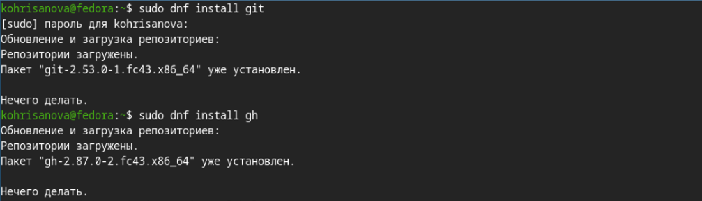
Произвожу базовую настройку git. (рис. @fig-02)
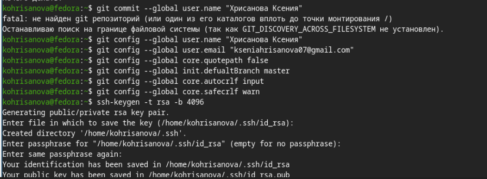
Создаю SSH ключи (рис. @fig-03)
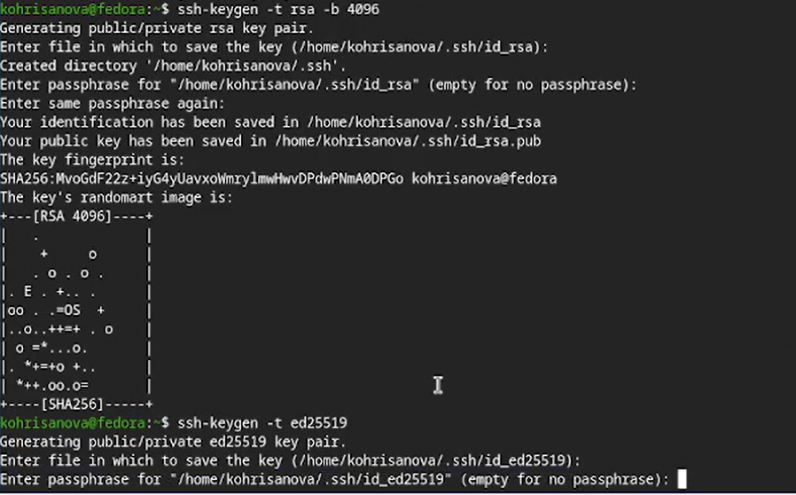
Создаю PGP ключ(рис. @fig-04)
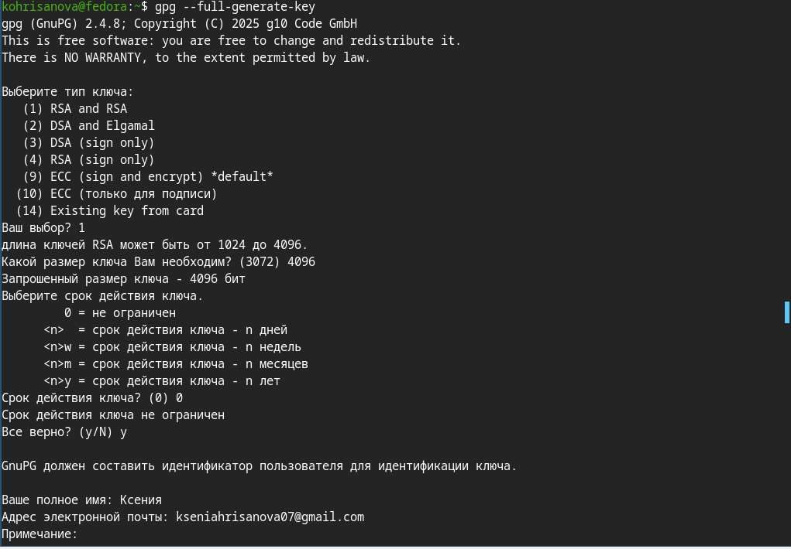
После создания ключа я скопировала его и добавила в настройках GitHub (рис. @fig-05).
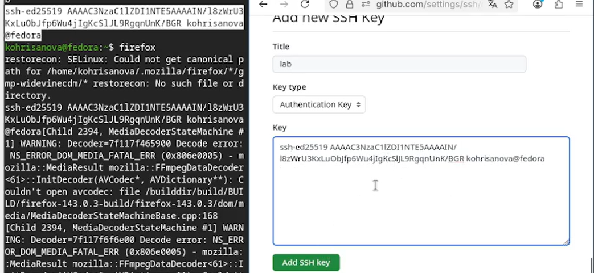
Экспортировала PGP-ключ и добавила на GitHub(рис. @fig-06)
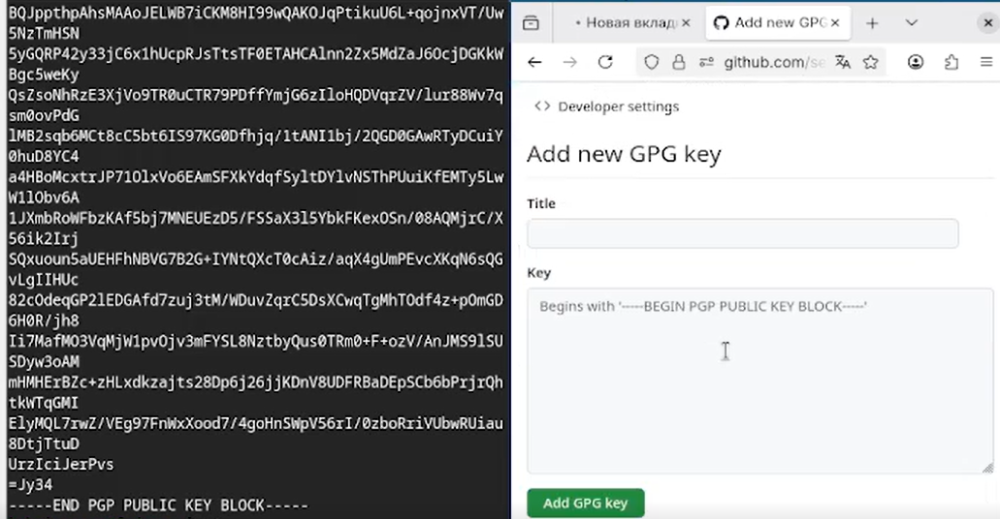
Настраиваю автоматические подписи для коммитов. (рис. @fig-07)
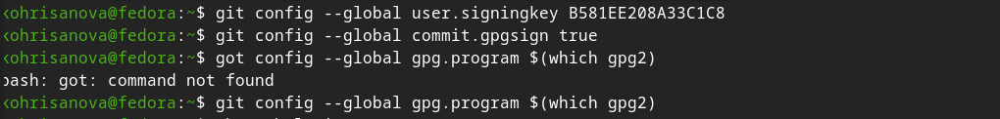
Авторизуюсь на github для работы через терминал. (рис. @fig-08)
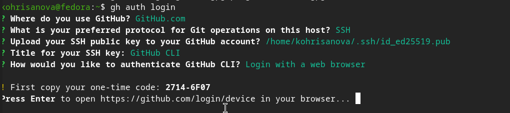
Cоздаю структуру каталогов(рис. @fig-09)
Создаю репозиторий на GitHub из шаблона(рис. @fig-10)
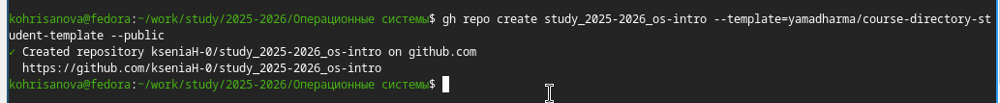
Клонирую репозиторий(рис. @fig-11)
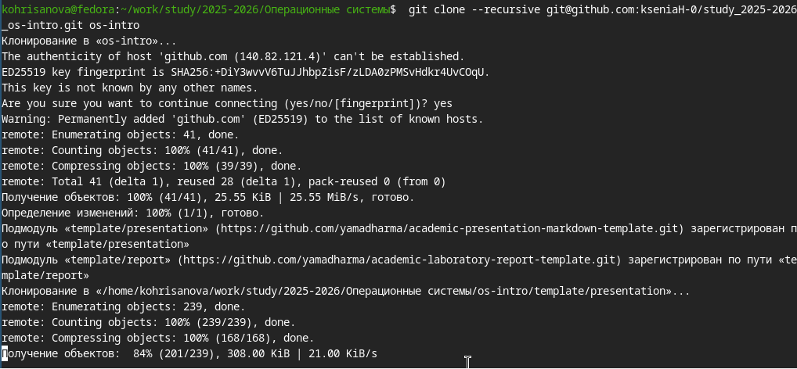
Настраиваю рабочую директорию (рис. @fig-12)
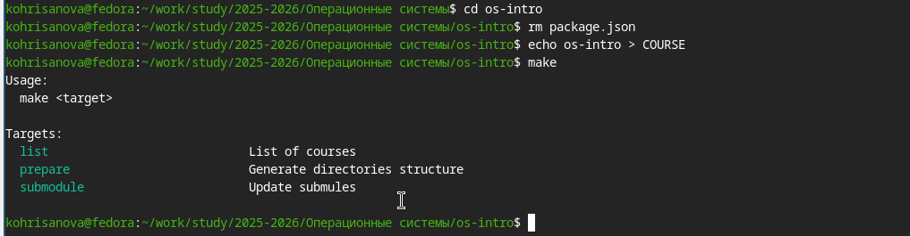
Отправляю изменения на GitHub(рис. @fig-13)
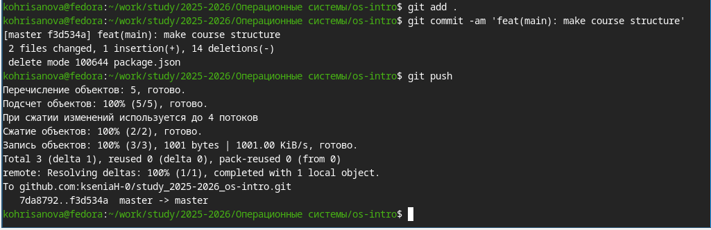
В ходе выполнения лабораторной работы были изучены основные принципы работы систем контроля версий и получены практические навыки работы с Git. Выполнена базовая настройка Git, созданы SSH и PGP ключи, добавлены в настройки GitHub, настроена подпись коммитов. Освоена работа с GitHub CLI, создан репозиторий из шаблона и подготовлена структура каталогов. Цель работы достигнута.